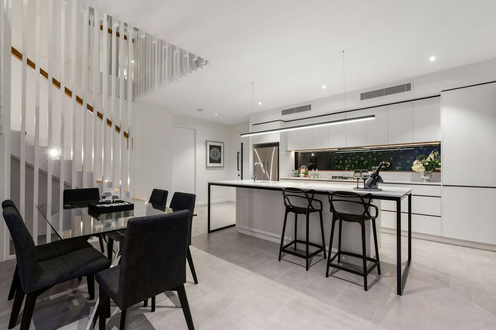

A Brisbane kitchen project should be scoped around budget, licensing and disruption first. The source page gives typical costs of $15,000 to $60,000+, with makeovers often taking 2 to 4 weeks, standard renovations 4 to 8 weeks, and custom projects 8 to 12 weeks. It also states that Queensland building work over $3,300 requires a current QBCC licence, so licence checks belong early in the quote process.
For homeowners comparing kitchen renovation brisbane options, the useful starting point is not a style moodboard, but a clear brief that links budget, storage, licensed trades and daily household disruption.
Kitchen Renovation Brisbane Explained
Kitchen Renovation Brisbane presents the project as a choice between simple makeovers, standard renovations and complete custom work. That distinction is useful because it keeps early conversations from drifting into benchtop samples before the harder questions are answered: what is staying, what is being replaced, which trades are needed, and how long the kitchen can be partly unavailable.
A practical brief should describe the current problem in plain language. The source page names outdated kitchens, lack of storage, inefficient layouts and worn benchtops as common reasons for renovating. Those are different jobs. More drawers may solve one household's issue, while another needs a new layout, appliance integration and lighting plan.
- Keep items that are functional, well placed and compatible with the new layout.
- Replace surfaces, cabinetry or lighting that limit daily use.
- Confirm which work needs licensed plumbers or electricians before accepting a quote.
What Brisbane Households Should Ask Before Quoting
The money page says qualified professionals should understand Brisbane homes and local building requirements. For the reader, that translates into evidence rather than reassurance. Ask how the proposed layout suits the property type, where storage can be gained without crowding circulation, and whether the quote separates cabinetry, benchtops, splashbacks, appliances, lighting and trade work.
Queensland licensing is a key checkpoint because the source page states that building work over $3,300 requires a current QBCC licence. It also says licensed plumbers and electricians are required by Queensland law. A quote should therefore make clear who is responsible for regulated work, how variations are approved, and what warranty applies to workmanship.
For a second editorial view of the same renovation topic, the kitchen reno Brisbane guide is a useful companion because it keeps the focus on planning decisions rather than decorative trends.
Budget Signals Hidden In The Brief
The published cost range is broad: $15,000 to $60,000+, with premium custom kitchens exceeding the upper end shown in the FAQ. Instead of treating that range as a quote, use it to sort the project into a likely tier before designers or trades are asked to price it.
The source page states that cabinetry can account for 25 to 40 percent of the total budget, making it the largest expense in many projects. That is why storage choices deserve early attention. Bespoke cabinets, corner solutions, walk-in pantry ideas, pull-out systems and overhead storage can improve usability, but each decision can also change joinery complexity.
Benchtop selection needs the same discipline. The page notes that traditional engineered quartz is banned due to silicosis concerns and refers to silica-free stone alternatives, durable laminate and premium porcelain surfaces. A careful quote should identify the surface type, splashback finish, edge details and installation assumptions so comparisons are like for like.
Timing And Disruption Planning
Timing depends on the scope chosen. The source page gives 2 to 4 weeks for makeovers, 4 to 8 weeks for standard renovations, and 8 to 12 weeks for custom projects. Those figures are more useful when paired with household logistics: temporary cooking, appliance delivery, trade sequencing and decisions that must be final before work begins.
Design consultation can reduce uncertainty if it produces practical outputs. The page refers to layout planning, material selection, 3D renders and detailed quotes. Those items help a homeowner see whether the planned kitchen answers the original problem, especially where storage, lighting or appliance integration are the reason for renovating.
- Write down the daily frustrations with the existing kitchen.
- Separate must-have layout changes from preferred finishes.
- Ask what must be ordered before the start date.
- Confirm how quote changes are documented.
Who This Applies To
This guide is most relevant to Brisbane homeowners who already know their kitchen is not working but have not yet chosen the scale of the renovation. It suits households comparing a surface-level refresh against a standard renovation, as well as owners considering custom cabinetry, new benchtops, splashbacks, storage systems, appliance integration or lighting changes.
It is less useful for readers seeking a fixed price without a site-specific brief. The source page itself presents cost and time as dependent on scope, which means accurate comparison starts with the same inclusions across each quote. Where regulated plumbing or electrical work is involved, licensing and accountability should be checked before style decisions dominate the conversation.
- Define the problem. List the storage, layout, benchtop, lighting or appliance issues that the renovation must solve.
- Set the scope. Decide whether the project is a makeover, standard renovation or custom kitchen before comparing quotes.
- Check licensing. Ask for current QBCC licensing where Queensland building work exceeds the stated threshold.
- Compare inclusions. Review cabinetry, benchtops, splashbacks, appliances, lighting, trade work, warranty and variation rules side by side.
| Scope | Published timing | Best question to ask |
|---|---|---|
| Makeover | 2 to 4 weeks | Which surfaces or fittings change, and what stays in place? |
| Standard renovation | 4 to 8 weeks | Which trades are included, and how are variations approved? |
| Custom project | 8 to 12 weeks | How are cabinetry, storage, benchtops and appliance integration specified? |
Common questions
How much should a Brisbane kitchen renovation budget allow? The source page gives a typical range of $15,000 to $60,000+, depending on scope. It also states budget renovations may start from $15,000 to $25,000, mid-range projects from $30,000 to $60,000, and premium custom kitchens can exceed $40,000 to $80,000+.
How long does the work usually take? The published timing guide is 2 to 4 weeks for makeovers, 4 to 8 weeks for standard renovations, and 8 to 12 weeks for custom projects. Treat those as planning ranges, then confirm ordering, trade sequencing and site access in the quote.
Why does cabinetry need early attention? The source page says cabinetry can account for 25 to 40 percent of the total budget. It also names custom cabinets, pantry designs, pull-out systems, corner solutions and overhead storage as choices that affect both usability and project detail.
What licensing question should be asked? Ask whether the relevant work is covered by a current QBCC licence. The source page states that building work over $3,300 in Queensland requires a current QBCC licence, and that plumbers and electricians must be licensed for their work.
This guide covers Brisbane kitchen planning, scope, quoting, licensing checks, budget signals and timing ranges using the supplied source material.